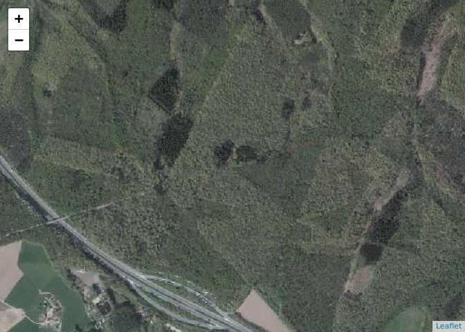

Using WMS service in R
How to use WMS (raster) GIS services within R scripts
WMS stands for Web Map Service. The service provides prerendered tiles at different scales. This makes it useful to include them as background images in maps.
wms_grb links to the WMS of the GRB-basiskaart, the Flemish cadastral map. It depicts land parcels, buildings, watercourses, roads and railroads.
wms_ortho contains a mosaic of recent orthophotos made during the winter. The layer Ortho contains the images, the layer Vliegdagcontour detail on the time when the pictures were taken.
wms_inbo is a WMS providing several layers
wms_hunting displays hunting grounds in Flanders
wms_grb <- "https://geoservices.informatievlaanderen.be/raadpleegdiensten/GRB-basiskaart/wms"
wms_ortho <- "https://geoservices.informatievlaanderen.be/raadpleegdiensten/OMWRGBMRVL/wms"
wms_inbo <- "https://geoservices.informatievlaanderen.be/raadpleegdiensten/INBO/wms"
wms_hunting <- "https://geoservices.informatievlaanderen.be/raadpleegdiensten/Jacht/wms"
As background of interactive maps
WMS layers can be added to a leaflet map using the addWMSTiles() function.
library(leaflet)
leaflet() %>%
setView(lng = 4.287638, lat = 50.703039, zoom = 15) %>%
addWMSTiles(
wms_grb,
layers = "GRB_BSK",
options = WMSTileOptions(format = "image/png", transparent = TRUE)
)

leaflet() %>%
setView(lng = 4.287638, lat = 50.703039, zoom = 15) %>%
addWMSTiles(
wms_ortho,
layers = "Ortho",
options = WMSTileOptions(format = "image/png", transparent = TRUE)
)

leaflet() %>%
setView(lng = 4.287638, lat = 50.703039, zoom = 15) %>%
addWMSTiles(
wms_inbo,
layers = "PNVeg",
options = WMSTileOptions(format = "image/png", transparent = TRUE)
)

leaflet() %>%
setView(lng = 4.287638, lat = 50.703039, zoom = 14) %>%
addTiles(group = "OSM") %>%
addWMSTiles(
wms_hunting,
layers = "Jachtterr",
options = WMSTileOptions(format = "image/png", transparent = TRUE)
)

leaflet() %>%
setView(lng = 4.287638, lat = 50.703039, zoom = 14) %>%
addTiles(group = "OSM") %>%
addWMSTiles(
wms_grb,
layers = "GRB_BSK",
options = WMSTileOptions(format = "image/png", transparent = TRUE),
group = "GRB"
) %>%
addWMSTiles(
wms_hunting,
layers = "Jachtterr",
options = WMSTileOptions(format = "image/png", transparent = TRUE),
group = "hunting<br>grounds"
) %>%
addLayersControl(
baseGroups = "OSM",
overlayGroups = c("GRB", "hunting<br>grounds"),
options = layersControlOptions(collapsed = FALSE)
)